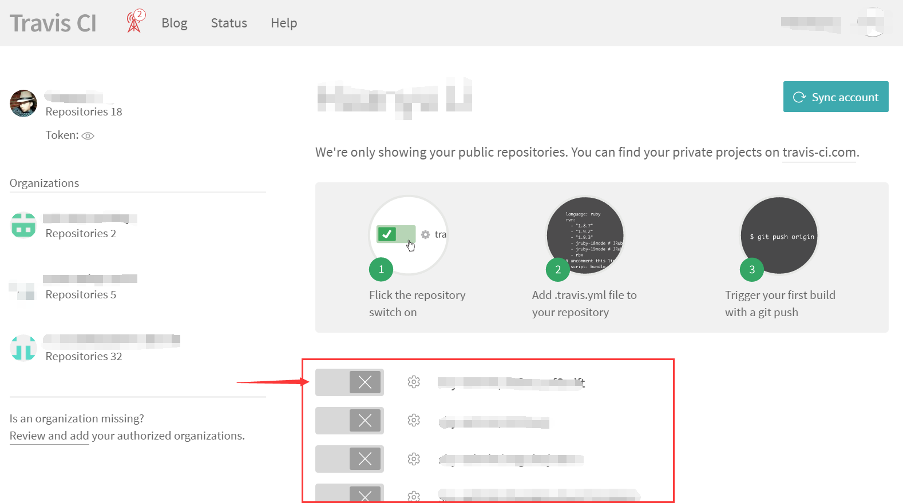
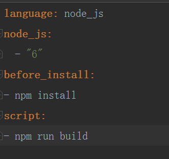
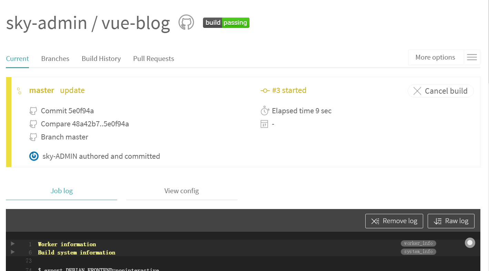

敏捷开发这个词我们经常听说，但是敏捷开发不是说动作快点就行，与之配套的还经常能听到持续集成/持续部署/持续交付。但是具体怎么做？
大公司是有专门的基础架构部门做相关系统的开发的，但小团队也有开源世界的玩法：travis CI。是个网站，也是一个服务，对github尤其友好。这个东西具体干什么呢？主要就是我之前提到的，持续集成/持续部署。持续集成的概念很简单，就是写一点代码就尽快把它合进master分支里，早合并早发现问题早解决。
但是真实情况是，开发团队水平参差不齐，要真让团队都随意合并代码，估计要不了几天就可以解散团队了。那怎么办？测试！
大家各自开分支做开发，然后随时向dev分支合并，然后dev分支被编译/打包、测试，都通过了，将代码合并到master分支。master分支积累到一定程度，打个tag，合并到deploy分支，打包测试部署。好吧，这也是理想情况，实际上爱咋用咋用吧。
使用方法：
先打开travis官网，用github账户登录，完成授权后可以看到自己的仓库，大概会是这样一个列表吧：

选择要使用travis来做持续集成的项目仓库打开开关。
然后去项目下新建一个文件.travis.yml（注意第一个点不要省略，在*nix下是隐藏文件的表示），这里我找个前端项目演示一下（别笑，现在前端是要打包的，只会html/CSS会失业的！）。地址：https://github.com/sky-admin/vue-blog
可以看到这是一个vue项目，clone到本地让它跑起来需要执行npm install, npm run dev。所以呢，.travis.yml里要写的东西如下：

然后提交这个文件。然后就可以看到travis里的这个界面了：

下面会是执行的log信息，如果执行顺利，不出错，就可以看到build passing的小图标，可以点开它找的markdown版本的写进仓库的readme哦，这样就可以告知别人这个项目当前是否是一个正常的，可以编译通过的项目。
刚刚script里我们只写了npm run build打包，还可以在build之前写npm run test跑跑单元测试。
其余用法请查阅官方文档，英文读起来太累我自己还没读完。说完CI我们来说说CD，如果说这个东西的作用就是帮助我们跑一下测试和构建，大可不必麻烦了，为了一个小图标何苦呢，自动部署才是提高生产力的东西。
首先根据这个logo信息我们可以看出来，travis应该是一套虚拟化系统，每次会为我们分配一个空的操作系统环境，OS X或者linux，好像可以指定，但是没啥差啦。然后可以指定语言和版本，然后script里可以执行一些脚本。欸你知道你的电脑怎么部署么？如果你是nix应该会输入scp xxx@ip:/host（仅针对前端部署，其它的要复杂一些，但是也是一些指令可以做完的，可以写在一个shell文件里然后在script里写./deploy.sh），然后travis也是为你提供了一个nix环境，那我们也可以scp啊，问题在哪？没有密码/密钥。
密码怎么搞我不知道，只谈密钥吧。密钥有个超简单的方法，就是扔仓库里同步到github上（真这样做就是SB……），那大家就都看到你的公钥私钥了。怎么办呐？travis提供了一个命令行工具：travis，用ruby写的，所以，用gem安装：gem install travis。
心好累不想写了看这里